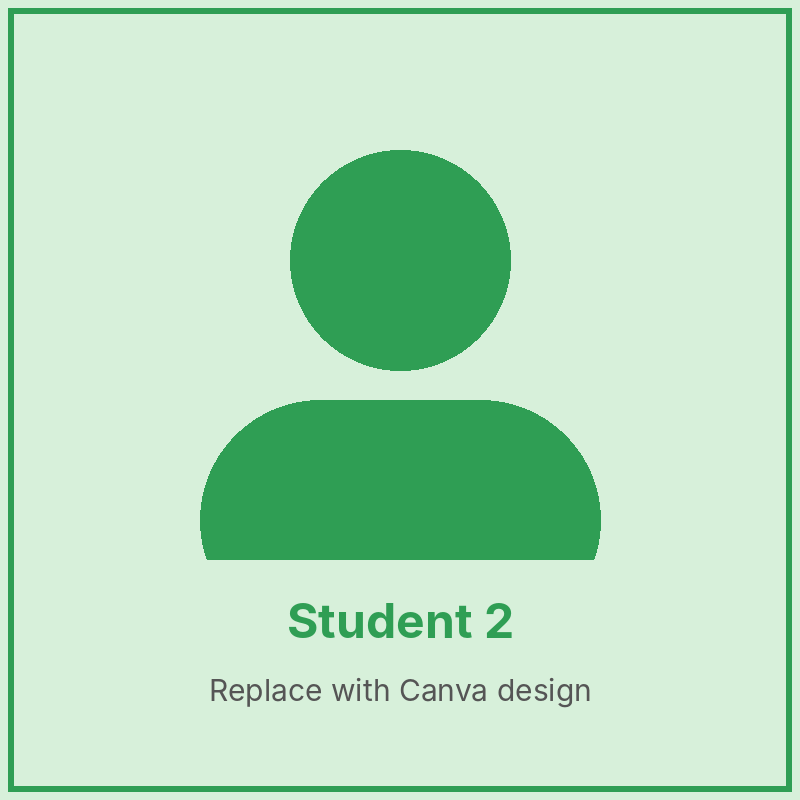
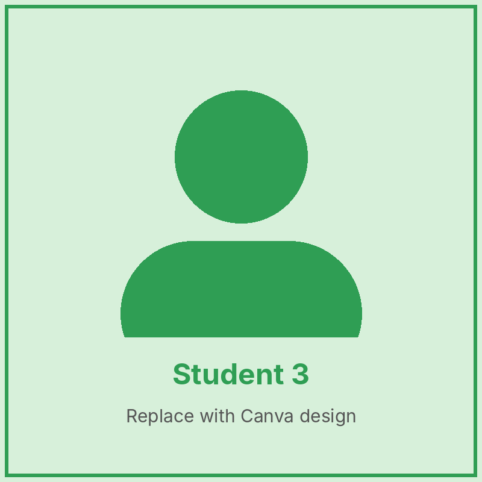
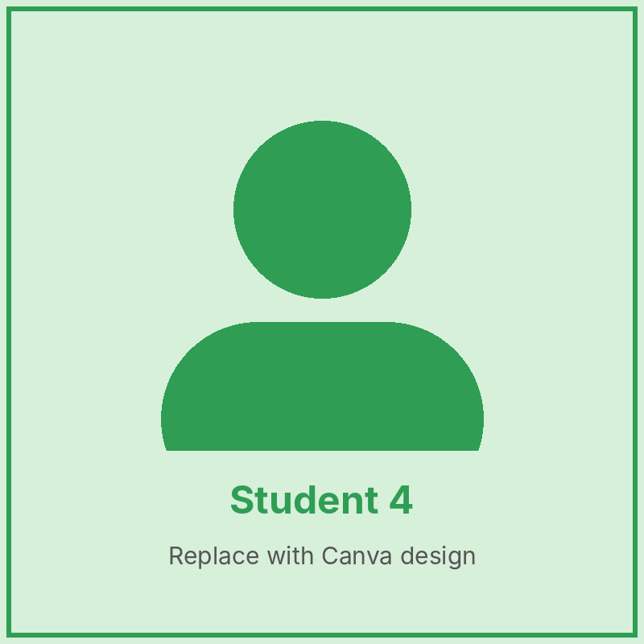
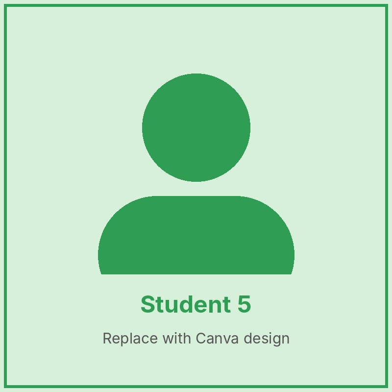
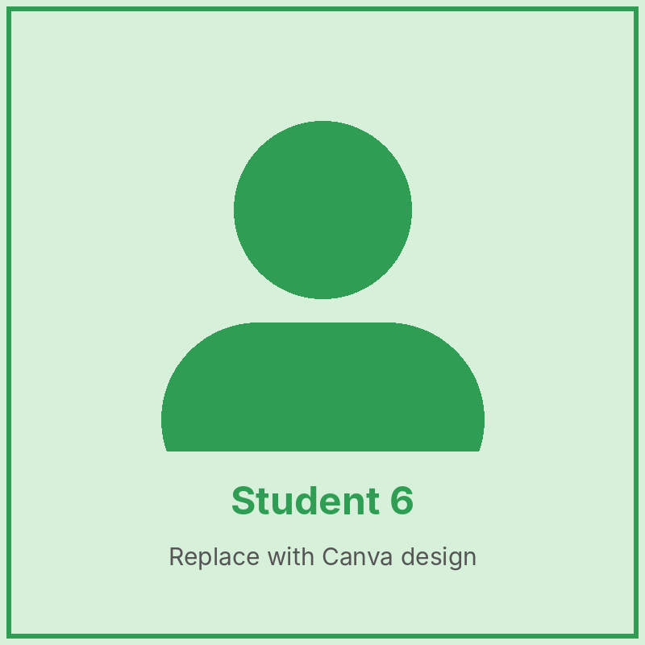

Our Class Teacher

Class Teacher
About the Class
In Primary 2, pupils build on the basics. They begin to read short storybooks on their own, write simple paragraphs and solve number problems. Group work helps them learn to share, listen and work together.
Our Subjects
- English Language – Reading storybooks, spelling and writing short paragraphs.
- Mathematics – Place value, addition and subtraction to 1,000, time and money.
- Basic Science & Technology – Living and non-living things, weather and simple tools.
- Social Studies – Good manners, rules and people who help us.
- Computer Studies – Parts of a computer and using the mouse and keyboard.
- Creative Arts – Craft work, painting and singing.
Meet Our Pupils




